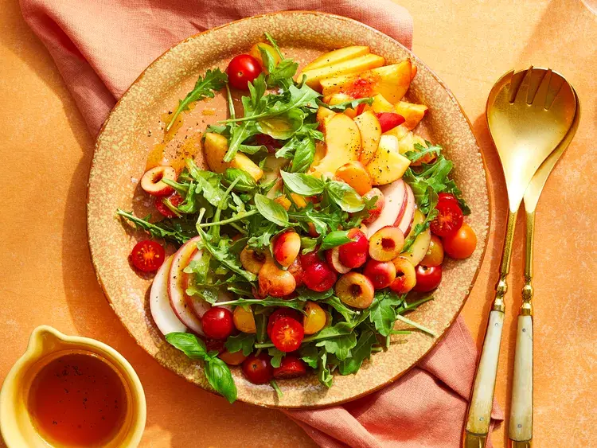

Be the first to rate & review
|
1 Photo

This juicy, vibrant arugula salad features fresh cherries, peaches,
and nectarines for a summery flavor. For an extra touch of sweetness,
opt for rosé vinegar, a rosé wine-based vinegar with a bright, fruity
flavor.
By Karen Rankin
|
Published on June 4, 2023
Ingredients
- 2 tablespoons extra-virgin olive oil
- 2 tablespoons red wine vinegar or rosé vinegar
- 3/4 teaspoon salt
- 1/2 teaspoon black pepper
- 1 1/2 cups red cherry tomatoes, halved
- 1 1/2 cups yellow cherry tomatoes, halved
- 1 (5-ounce package) arugula
- 3/4 cup fresh basil leaves
- 2 nectarines, sliced
- 1 large white peach, sliced
-
1 cup Rainier or other yellow-flesh cherries, pitted and halved
- 1/2 teaspoon flaky sea salt